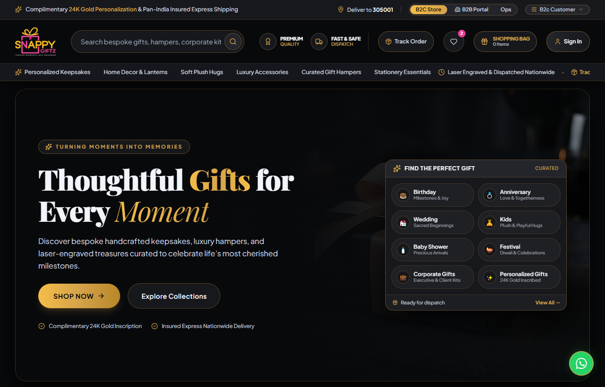

Snappy Gifts — Luxury E-Commerce & Personalization Platform
Full-featured gifting e-commerce platform offering 24K gold custom laser-engraved keepsakes, luxury gift hampers, festive collections, and real-time product preview rendering. Engineered with Next.js App Router, React 19, TypeScript, and dynamic cart state management.

- Built real-time product preview rendering allowing customers to preview custom names and inscriptions.
- Engineered persistent shopping cart state handling variant selections, price calculations, and item quantities.
- Structured modular component hierarchy with clean separation between UI presentation and state logic.
- Configured Playwright test scripts and automated workflow scripts for regression verification.